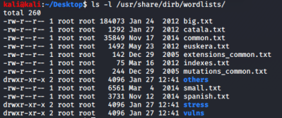
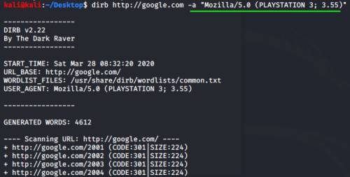

dirb
installation:dirb is a command line tool which is use wordlists to discover resources on web servers.
OPTIONS:
<wordlist> → By defauld dirb use this wordlist: /usr/share/dirb/wordlists/common.txt
but there are also others preinstalled wordlists of dirb
in general all the wordlists of kali are in
/usr/share/wordlists  dirb http://google.com /usr/share/dirb/wordlists/small.txt
→ Username and password to use for the authentication. If they are correct we can access at many more resources!
dirb http://example.com -u admin:admin
→ Specify custom USER_AGENT. (Default is: "Mozilla/4.0 (compatible; MSIE 6.0; Windows NT 5.1)")
Useful if a Web Application want a specific user agent. Here
http://useragentstring.com/pages/useragentstring.php we can find a lot of them
-r → don't Search Recursively, this mean than one time found a directory dirb doesn't try to bruteforce the subdirectories too
dirb https://google.com -r
→ is a delay settings in milliseconds, we can use it in case an application use a web application firewall that block user that request data too frequently
dirb https://google.com -z 1000 #one request every one second
→ allow to specify the extensions of the file we are searching, the extensions separated by a comma will be combined with the words from the wordlist
dirb https://google.com -X ".bak,.old,.php"
→ we can use the x lowercase to add the extensions mentioned before in a file and then give it to dirb
dirb https://google.com -x extensions.txt
→ Save output of dirb in a file
dirb https://google.com -o results.txt